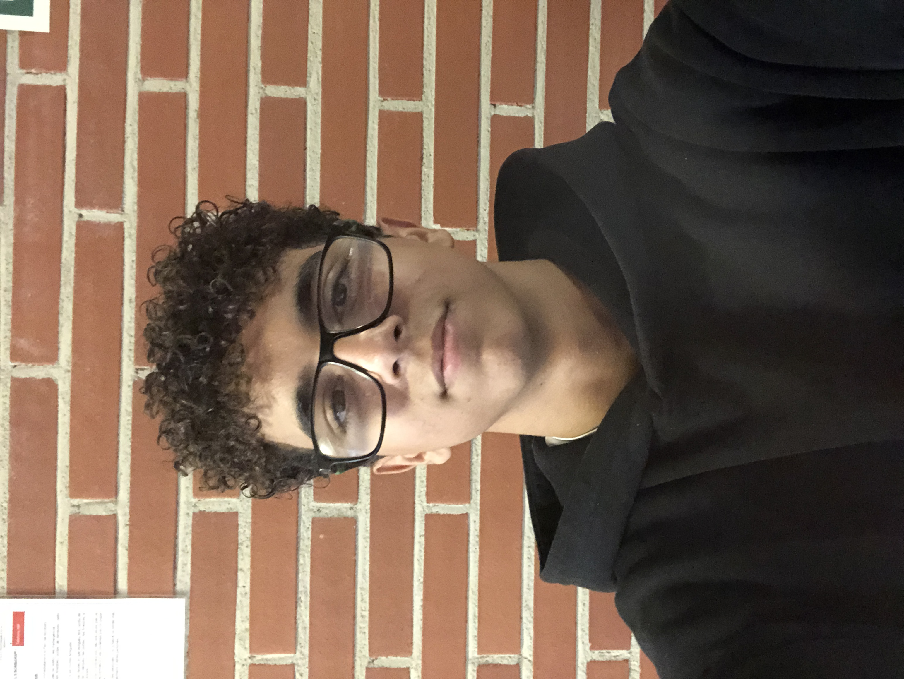

Imran Talbi
Edat: 15 anys
Ciutat: Balaguer
Correu electrònic: italbi@inscaparrella.cat
Experiència
- Creació d’una pàgina web bàsica amb HTML i CSS.
- Participació en tornejos escolars de futbol.
- Col·laboració al club de videojocs de l’escola.
Habilitats
HTML
CSS
Treball en equip
Creativitat
Esportiu